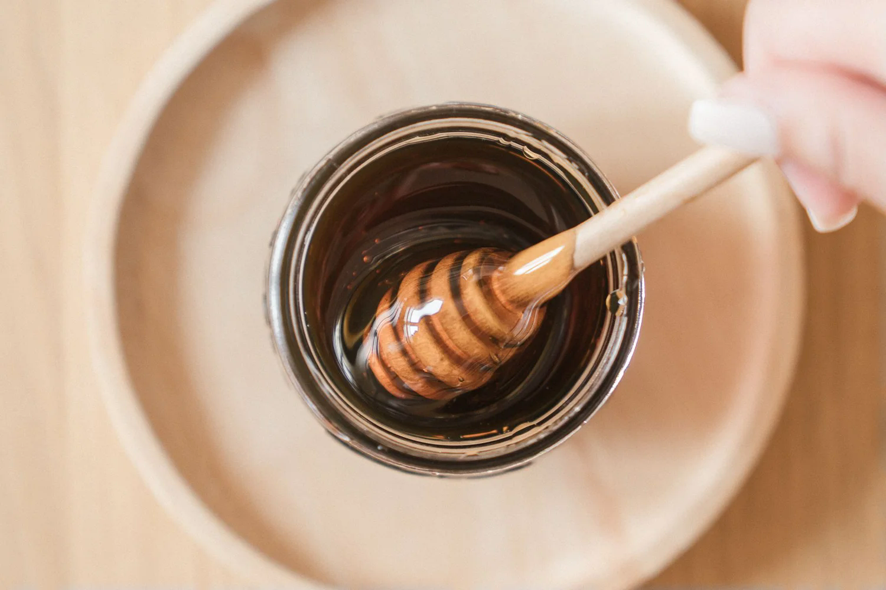

01
Waldhonig
Kräftig und würzig für die Käsejause oder ein Butterbrot, das nach mehr schmecken darf
250 g / 500 gWaldhonig ansehenImkerei · Krems & Umgebung
Waldhonig, Cremehonig und Honigwaben von Thiemo Grassler, für die Jause daheim und alle, die ihr Butterbrot gern ein bisserl ernster nehmen

Das Sortiment
Was gerade ins Glas kommt, bestimmt die Ernte, deshalb am besten vor der Abholung kurz nachfragen
Kräftig und würzig für die Käsejause oder ein Butterbrot, das nach mehr schmecken darf
250 g / 500 gWaldhonig ansehenFein gerührter, milder Honig für alle, die beim Frühstück gern dicker auftragen
250 g / 500 gCremehonig ansehenFür alle, die’s gern am Stück haben, mit Honig direkt aus der Wabe zum Portionieren und Anrichten
250 g / 2 kgHonigwaben ansehenDie Imkerei
Weil ihm die Arbeit mit Bienen Freude macht, kümmert sich Thiemo selbst um seine Völker und füllt den Honig für den direkten Verkauf ab.
Deinen Honig bekommst du nach Vereinbarung direkt bei ihm, ohne Umweg übers Supermarktregal.
Mehr über die ImkereiAb Hof
Wenn du weißt, welcher Honig es werden soll, macht ihr Menge und Abholtermin direkt aus, damit du nicht auf gut Glück vor der Tür stehst.
Und wenn’s ein bisserl mehr wird, ist im Raum Krems nach Absprache auch eine Zustellung möglich.

Für Gastronomie
Für Frühstücksbuffet und Küche gibt’s die passenden Mengen nach Absprache